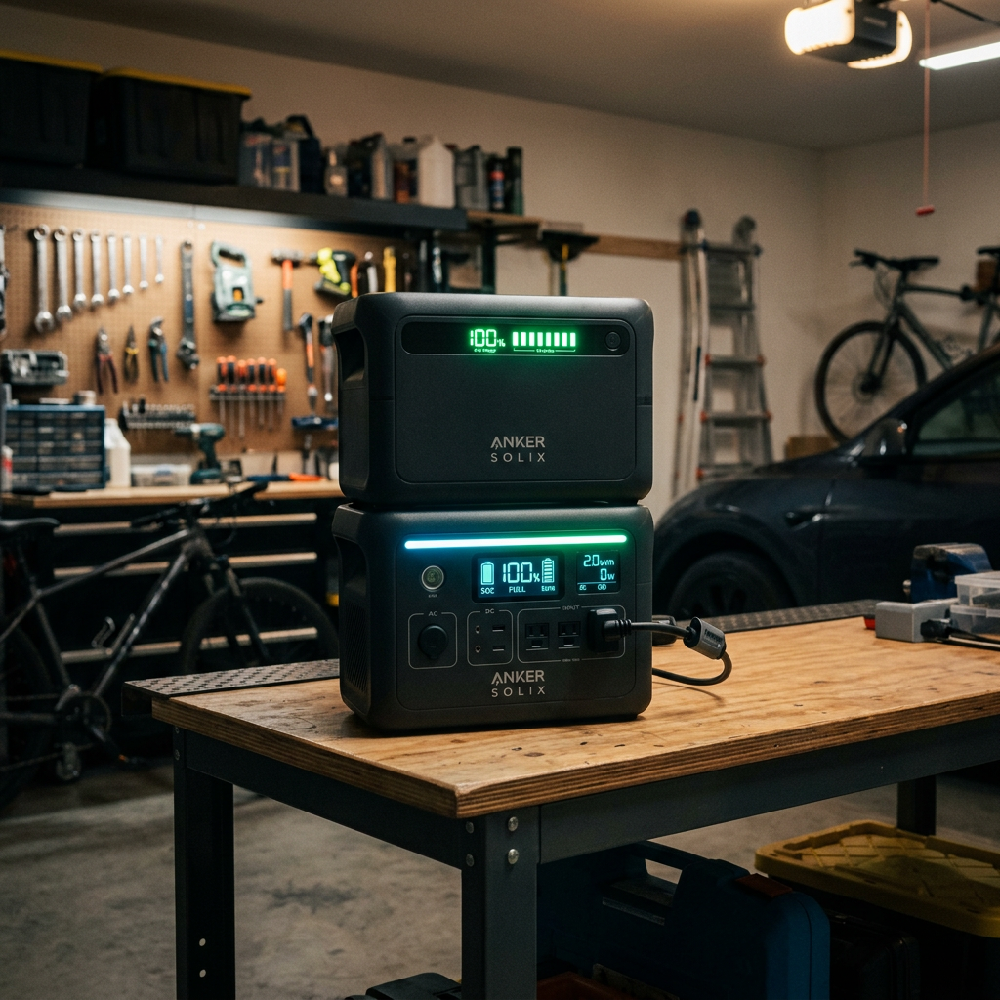
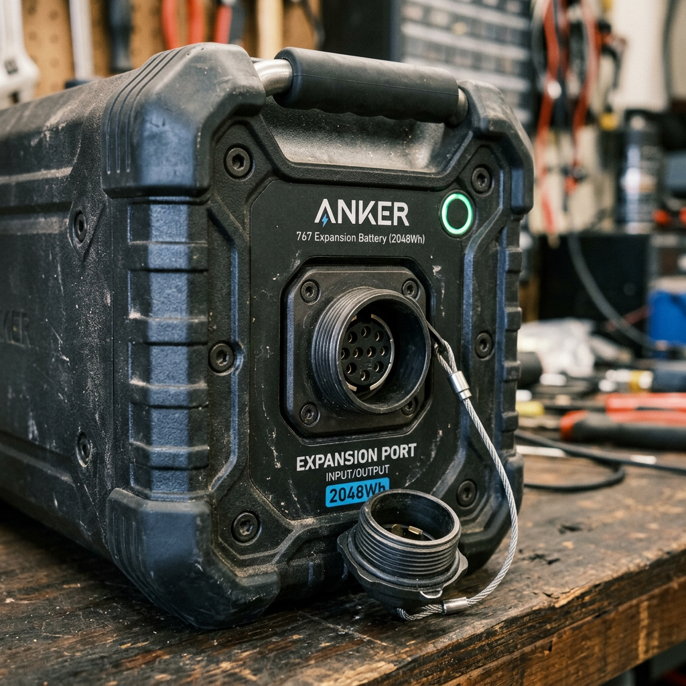
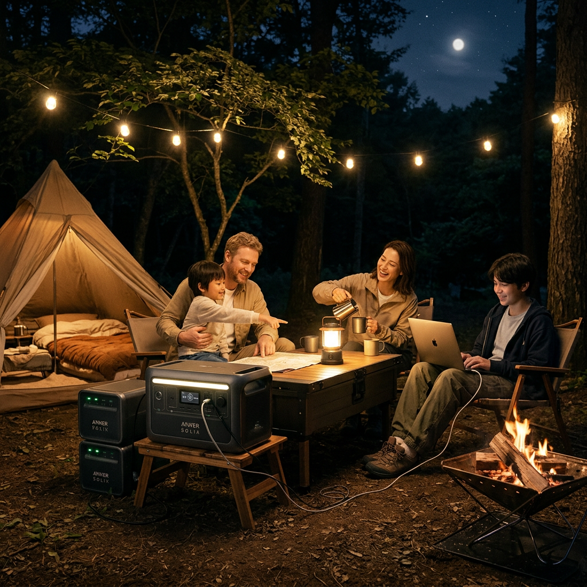

Anker SOLIX BP2000 Expansion Battery Review: The Ultimate Power Multiplier for Your Home Backup
Stop Worrying About Power Limits: The Expansion Your Setup Demands
You’ve invested in a high-end portable power station because you value security. But when the grid goes down or you’re miles away from civilization, that initial capacity can disappear faster than expected. The anxiety of watching your battery percentage drop while running essential appliances is a feeling every off-grid enthusiast and homeowner wants to avoid.
The Anker SOLIX BP2000 Expansion Battery is the definitive answer to that problem. It isn't just an accessory; it is a force multiplier that transforms your Anker SOLIX F2000 (PowerHouse 767) from a temporary fix into a long-term energy solution. Whether you are preparing for a week-long outage or powering a heavy-duty mobile workshop, this expansion battery ensures you never have to choose which appliance to keep running.

Comparing Your Power Potential
To help you decide how much extra runtime you truly need, we have compared the standalone unit against the expanded configurations available with the BP2000.
| Configuration | Total Capacity | Best For | Verdict |
|---|---|---|---|
| Anker SOLIX BP2000 (Single Expansion) | 4096Wh (with F2000) | Extended camping & overnight home backup | The Sweet Spot for Value |
| F2000 Standalone | 2048Wh | Short day trips & emergency light use | Entry-Level Only |
| F2000 + Max Expansion (7 Units) | Over 16kWh | Full off-grid living & multi-day outages | The Ultimate Powerhouse |
Why the Anker SOLIX BP2000 is a Non-Negotiable Upgrade
1. Massive 2048Wh Capacity Boost
Every BP2000 unit doubles the capacity of your existing F2000 system. We are talking about an additional 2048Wh of energy. In real-world terms, that means running a full-sized refrigerator for an extra 15-20 hours or keeping your laptop charged for weeks. The ability to scale up to 16kWh by daisy-chaining units means your power station can grow as your needs do.
2. Ultra-Durable LFP Battery Chemistry
Not all batteries are created equal. The Anker SOLIX BP2000 utilizes EV-grade LiFePO4 (LFP) cells. These are designed to last for over 3,000 charging cycles before seeing any significant drop in capacity. When used daily, that is over 10 years of reliable service. Anker’s InfiniPower™ technology further ensures that the internal components are protected from heat and wear, making this a one-time investment for a decade of security.

3. Seamless Plug-and-Play Integration
Complexity is the enemy of emergency preparedness. The BP2000 connects to the main unit via a single, heavy-duty expansion cable. There are no complicated menus to navigate and no software hurdles. Once plugged in, the main unit recognizes the extra capacity instantly, treating the combined stack as one massive battery reservoir.
4. Rapid Recharging and Efficiency
Time is of the essence when the sun is out or the generator is running. The BP2000 supports high-speed recharging through the main unit. Because it shares the load with the primary battery, it maintains lower internal temperatures, which increases charging efficiency and preserves the lifespan of the cells.
The Verdict: Is It Worth It?
If you currently own an Anker SOLIX F2000, the BP2000 is the most cost-effective way to increase your energy independence. Buying a second standalone power station is significantly more expensive and less efficient than simply adding expansion packs.
For those who take emergency preparedness seriously, or for those who want to run high-draw appliances like space heaters, air conditioners, or medical equipment without constant stress, the BP2000 is not just an add-on—it is a necessity. It provides the peace of mind that comes from knowing you have the reserves to weather any storm.
Check Price on Official Store
Final Recommendation
Don't wait for the next blackout to realize you don't have enough juice. The Anker SOLIX BP2000 Expansion Battery is currently the gold standard for modular power. It’s rugged, incredibly long-lasting, and designed by a brand that leads the industry in portable energy. Secure your power supply today and double your capacity with a single click.
Check Price on Official Store